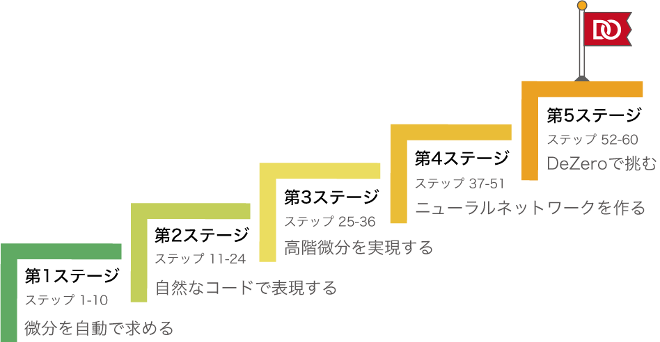

まえがき¶
発見の旅とは、新しい景色を探すことではない。 新しい目を持つことである。
――マルセル・プルースト（フランスの作家：1871―1922）
現在、ディープラーニングによって、あらゆる分野で技術革新が起こっています。車の自動運転、病気の自動診断、高精度な機械翻訳、高度なロボット制御――。フィクションの世界で描かれていたような話が、ここ最近になって現実味を帯び、さらには、社会の中で動いている例をいくつも目にします。驚くべきことに、それらフィクションのような技術の多くは、ディープラーニングによってはじめて可能になった（もしくは、可能になりつつある）のです。私たちは、まさに、ディープラーニングが世界を変える時代をリアルタイムに生きていると言えます。
このようにディープラーニングが活況を呈す中で、これまでに数多くのディープラーニングのフレームワークが生み出されてきました。PyTorch、Chainer、TensorFlow、Caffe……。この分野では様々なフレームワークが存在し、日々しのぎを削るように開発が行われています。そのおかげで、世界中の研究者や技術者たちは、それらを使って効率的に問題を解決できます。ディープラーニングのフレームワークは、言うなれば、最先端の技術を支え、前進させるために不可欠な存在です。
本書を手に取った読者の方も、ディープラーニングのフレームワークを実際に使ったことがあるかもしれません。最近では情報が豊富に用意され、実行環境も整備されてきました。そのため、ディープラーニングに関するコードを書くこと自体は、いとも簡単にできてしまいます。わずか数十行（もしくは数行）のコードだけで、高度な技術が実現できるのも、そういったフレームワークのおかげです。
それでは、そのようなフレームワークは――多くの人から利用され、多くの場所で稼働する“本物”のフレームワークは――どのような仕組みで動いているのでしょうか。どのような技術が使われ、どのような思想が根底に流れているのでしょうか。そういった疑問を持つことで、新しい旅が始まります！
作るからこそ、見えるモノ¶
ディープラーニングのフレームワークの中には、驚くべき技術やおもしろい仕掛けがたくさん詰まっています。本書は、それらを紐解き、その技術を正しく理解してもらうための本です。そして、その技術的な「おもしろさ」を味わってもらうためにあります。その目的のために、本書では「ゼロから作る」という方針で進みます。何もないところからスタートし、作りながら考え、動かしながら理解を深めます。そのような経験を通して、ディープラーニングのフレームワークの本質に迫ります。
フレームワークを作る過程では、多くの学びがあるでしょう。「なるほど、こんな技術が使えるのか！」、「このようなアイデアが、こんな風に実装できるのか！」――そのような発見は、既存のツールを使うだけでは分かりません。作るからこそ、分かることがあります。そして、作るからこそ、見えるモノがあります。
1つ例を挙げてみましょう。もしかすると読者の中には、ディープラーニングのフレームワークとは、単に「レイヤ」や「関数」などを寄せ集めたライブラリのようなモノだと考えている人がいるかもしれません。実は、ディープラーニングのフレームワークは、それよりも大きな存在です。それは、一種のプログラミング言語です。もっと言うと、微分計算機能を持つプログラミング言語なのです（最近では「微分可能プログラミング言語」とも呼ばれます）。そういうことが、本書を読み進めて「ゼロから作る過程」を通じて見えてくるはずです。
本書オリジナルのフレームワーク¶
ディープラーニングのフレームワークは、黎明期の段階では、それぞれに大きな違いがありました。しかし、現代のフレームワークは成熟した段階に来ています。実際、PyTorch、Chainer、TensorFlowといった人気のフレームワークは、同じ方向へと向かっています（もちろん、それぞれに特徴があり、表面的なインターフェイスは異なりますが、その設計思想は共通になりつつあります）。本書では、その共通項を意識して、教育面を重視したミニマムなフレームワークを設計しました。このフレームワークを、本書のタイトルにちなんで「DeZero（ディゼロ）」と呼ぶことにします。なお、ロゴも次のとおり制作しました。

ミニマム： DeZeroは、分かりやすさを第一に設計したフレームワークです。外部ライブラリの使用は最小限に抑え、かつ中身のコードも最小限に抑えています。そのため、DeZeroのコード全体を理解するために、多くの時間を必要としないでしょう。
ピュアPython： ディープラーニングのフレームワークは、多くの場合、複数の言語（たとえば、PythonとC++など）を用いて実装されています。一方DeZeroは、Pythonだけで実装されています。そのためPythonについて知識のある方は、DeZeroの中身をストレスなく読むことができます。またピュアPythonであるため、DeZeroをスマートフォン上で実行したり、Google Colaboratoryのようなサービスを使ってクラウド上で動かしたりすることも簡単にできます。
モダンな機能性： PyTorch、Chainer、TensorFlowなどのモダンなフレームワークは、共通の機能を多く持ちます。たとえば、最も重要な共通項の1つとして、Define-by-Runが挙げられます。Define-by-Runとは、ディープラーニングで行う計算の「つながり」を、計算を行うタイミングで作る仕組みです（この辺の話は、本文で詳しく説明します）。本書で作るDeZeroは、Define-by-Runスタイルのフレームワークです。そして、モダンなフレームワークと多くの共通点を持つように設計しています。
DeZeroは本書オリジナルのフレームワークです。その実装はChainerをベースとし、PyTorchの設計も取り入れています。特徴を詳しく述べると、次のようになります。
NOTE
前作『ゼロから作るDeep Learning』、『ゼロから作るDeep Learning ❷』では、ディープラーニングをゼロから実装し、その仕組みを学びました。ただし、そこでは単純さを優先して、計算の「つながり」は“手作業”で設定しました。本物のフレームワークは、そこを自動化します。その1つのアプローチがDefine-by-Runと呼ばれるものです。本書では、DeZeroをゼロから作ることで、そのメカニズムを学びます。なお、本書を読むにあたって、前作「ゼロから作るDeep Learning」シリーズの知識は前提としません。
インクリメンタルに作る¶
DeZeroは小さなフレームワークですが、その中身は十分に複雑です。その複雑さに対処するため、本書は「DeZeroを作る」という工程を、小さく分けています。具体的には、全部で60のステップを積み重ねることで、少しずつDeZeroを作り上げるカリキュラム構成にしています。
たとえば、本書の最初のステップでは、DeZeroの「変数」を作ります。そこで実装するコードは、わずか3行です。そして、次のステップでは「関数」のためのコードを付け足します。各ステップの内容は、その時点で完結しているため、実際に動かすことができます。そのような形で、インクリメンタルに（段階的に）DeZeroを組み立て、動かしながら理解を深めていきます。
また本書で行う経験は、ソフトウェア開発の良い練習にもなります。それは、複雑なシステムをゼロから作り上げるという作業の追体験であり、ソフトウェア開発を学ぶのに最適な題材です。本書では、その点も考慮して、ソフトウェア開発の作法についてもページを割いています。
本書のロードマップ¶
前述したように、本書は全部で60のステップから構成されます。そして、その60のステップは、次の図のように大きく5つのステージに分けられます。ここでは、各ステージで行う内容を簡単に紹介します。

第1ステージでは、DeZeroの基盤を作ります。そこでは単純な問題だけを扱い、最少の時間で、微分を自動で求める仕組みを作ります（「微分を自動で求める」ということについては、本文を読み進めると明らかになります）。
第2ステージでは、より自然なコードでDeZeroを使えるように拡張します。第2ステージが終わる頃には、いつものPythonの構文――if文やfor文など――を使ってコードを書けるようになります。
第3ステージでは、2階微分が求められるようにDeZeroを拡張します。これを行うには、「逆伝播の逆伝播」が行えるようにDeZeroを拡張する必要があります。その仕組みを理解することによって、DeZeroの――さらには、現代のフレームワークの――新たな可能性を知ることになるでしょう。
第4ステージでは、ニューラルネットワークのためにDeZeroを整備します。それによって、DeZeroを使って簡単にニューラルネットワークを構築できるようになります。
最後の第5ステージでは、GPUへの対応やモデルの保存と復元など、ディープラーニングに不可欠な機能を追加します。また、CNNやRNNなど発展的なモデルにも取り組みます。それらはディープラーニングの応用問題として重要でありながらも、一筋縄ではいかない問題です。しかし、（Define-by-Runである）DeZeroであれば、そのような問題でもシンプルなコードで解けることが分かります。
NOTE
本書の最後に完成するDeZeroは、PyPI（Python Package Index）に登録してあります。PyPIは、Pythonのパッケージ・リポジトリです。これで、コマンドラインのpip install dezeroからDeZeroをインストールできます。もちろん、本書で作るDeZeroをベースに読者オリジナルのフレームワークを開発し、世界に公開することも可能です。
DeZeroを作る旅へ¶
以上が、本書の概要です。まとめると、本書はDeZeroというオリジナルのフレームワークをゼロから作るための本です。DeZeroという小さな――それでいて十分にパワフルな――フレームワークを、全部で60のステップで完成させます。それによって、PyTorch、Chainer、TensorFlowなどの現代のフレームワークに通じる知識を深めます。
最後に、繰り返しになりますが、本書の目的はDeZeroというオリジナルのフレームワークを作ることだけではありません。より重要なことは、DeZeroを作る“旅”を通して、現代のディープラーニングのフレームワークについて「新しい目」を獲得することです。そして、その「新しい目」によって、ディープラーニングという分野を、より広く見渡し、より深く見通すことです。その「新しい目」を発見する旅にこそ、真の価値があるはずです。
以上で準備は整いました。それでは、DeZeroを作る旅のスタートです！
リポジトリ¶
本書で使用するコードは、次のGitHubリポジトリから入手できます。
https://github.com/oreilly-japan/deep-learning-from-scratch-3